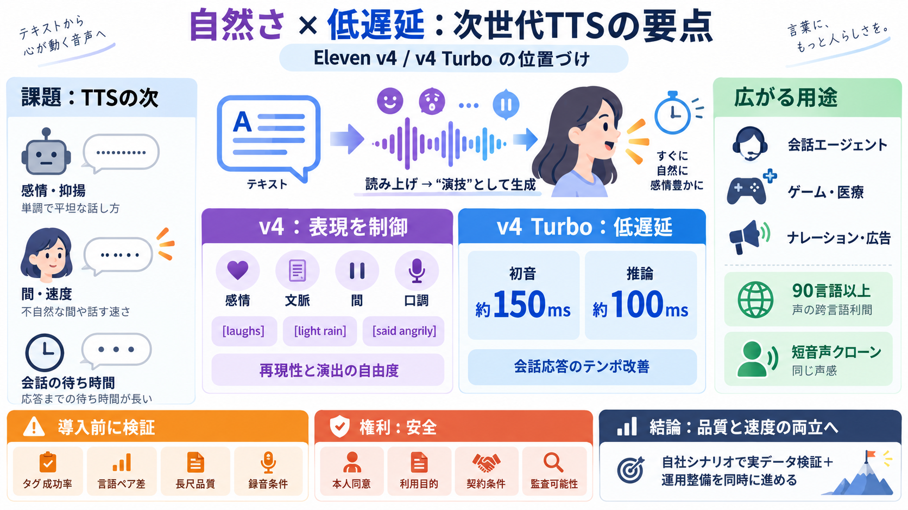

Eleven v4 and Eleven v4 Turbo Text to Speech models
Professional Voice Clones weren’t supported in v3. In Eleven v4, they’re back and perform with the model’s full emotiona…

文章から“読み上げ”ではなく、感情や間（ペーシング）まで含めた音声生成へ。さらにTurboは会話エージェント向けに低遅延化し、応答テンポを崩しません。
（感情豊か：感情表現 / 低遅延：応答速度）
TTSは音声化するだけでなく、感情・抑揚・速度・口調など「話し方」を自然に制御できるかが体験を左右します。加えて会話用途では遅延（応答までの時間）もKPIになりやすいです。
Eleven v4はトーン、間（ペーシング）、感情、キャラクター、文脈を解釈して表現を生成するとされています。たとえば同じ一文でも、劇的／優しい／緊急／コミカルなど語りの状態が変わり得ます。
[laughs] や [said angrily…] のようなインラインタグ、発話指示、効果音などに従って音声を生成できると説明されています。自動推測に加え、制作側が表現を“指定”できるのが要点です。
（英語用語）tag control（タグ制御）
Eleven v4 Turboは低遅延化され、初めて音声が聞こえるまでの中央値が約150ms、推論遅延が約100msと説明されています。会話では相手が話し終えるまでの待ち時間が体験に直結します。
記事の整理では、v4は“感情豊かさ”を高め、Turboはそれをベースに“低遅延”を重視したモデルです。用途で選び分ける設計思想になっています。
90言語以上に対応し、ある言語で収録された声を別言語でも話せる（アクセントをネイティブ寄りに保つ）方向性が述べられています。吹き替え／ローカライズの速度改善が期待できます。
（日本語）多言語対応 / （英語）multilingual
声クローンの類似性・一貫性が改善され、短い音声（例：10秒）で高精度に捉える「Instant Voice Clones」が紹介されています。長尺でも声の同一性を保つことは品質管理に直結します。
Turboの低遅延は顧客対応、ゲーム、医療など“言葉の速さ”が重要な領域で有効とされます。v4のタグ制御や感情表現は、脚本・ナレーション・広告の演出制御に寄与し得ます。
記事には詳細な評価条件（スクリプト範囲、感情タグ運用、言語別内訳、長尺の劣化条件など）が十分に示されていません。10秒クローンや多言語自然さも、録音品質・話者条件・用途で期待値が変わり得るため検証が必要です。
声クローンは強力な一方で、本人同意や利用規約、法的扱いが重要です。記事自体は安全面・法務の具体が薄いため、導入判断ではTrust Center／ポリシー／契約条件を別途確認すべきです。
Eleven v4は“演技できる音声”へ、Turboは“会話として返せる速さ”へ寄せるアップデートだと整理できます。導入では、自社シナリオでの実データ検証と、権利・安全の運用整備を同時に進めるのが前提です。
（日本語）検証＋整備
Professional Voice Clones weren’t supported in v3. In Eleven v4, they’re back and perform with the model’s full emotiona…
Eleven v4 wins 65%–81% of blind head-to-head TTS preference tests. ## A new architecture built for performance Built o…
ElevenLabs on September 28, 2026 launched Eleven v4, a text-to-speech model the company describes as its most emotive ye…
Changing model behavior: ElevenLabs calls v4 an actively evolving model and advises retesting as it changes. Save a fixe…
DeepSeek V4, integrated to the Platform through this upgrade, is one of the open-source foundation models released in Ap…